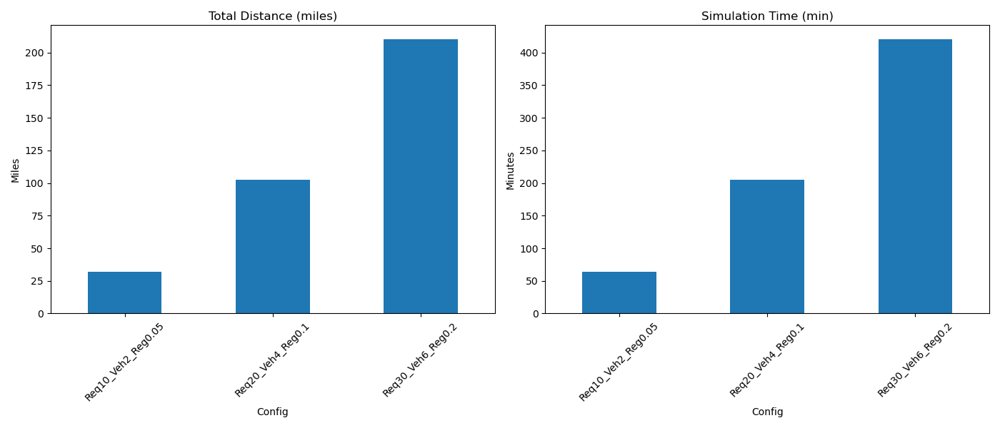

Below are the aggregated metrics from our three case studies, each representing a distinct scenario in terms of number of requests, vehicles, and region size.
| Config | NumRequests | NumVehicles | RegionSize | distance_miles | sim_time_min |
|---|---|---|---|---|---|
| Req10_Veh2_Reg0.05 | 10 | 2 | 0.05 | 31.837 | 63.674 |
| Req20_Veh4_Reg0.1 | 20 | 4 | 0.10 | 102.360 | 204.720 |
| Req30_Veh6_Reg0.2 | 30 | 6 | 0.20 | 210.445 | 420.890 |
This bar chart compares total distance (left) and simulation time (right) across the scenarios. We see how the system scales with the number of requests and region size.
